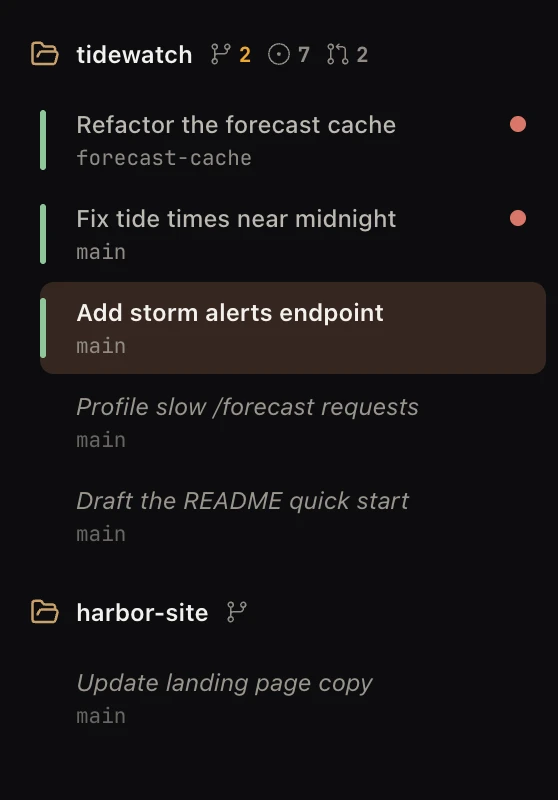
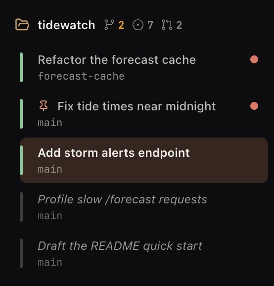
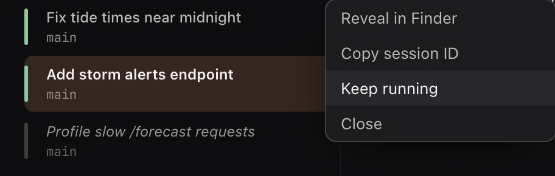
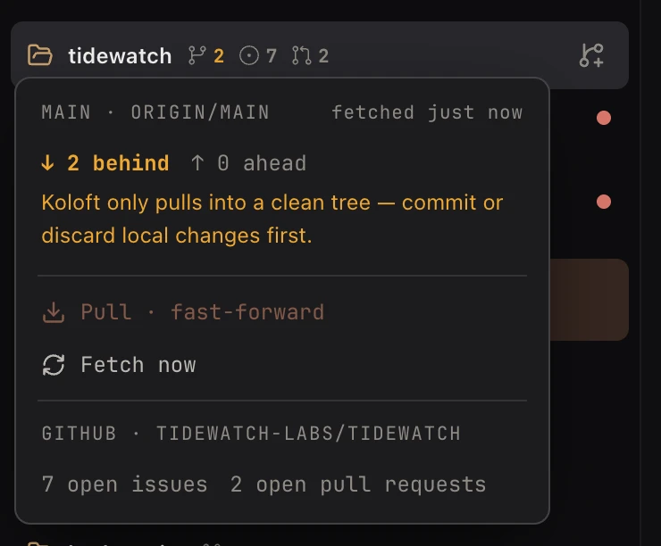

Folders and their sessions

Run a few agents for a week and you have dozens of old chats in many folders. Which one fixed the login bug? Which one is waiting for you right now? Koloft puts every folder in one list, with its sessions under it. You click a row to go back to it.
Where the list comes from
Claude Code and Codex already keep every session in their own files. Koloft reads the chats from there and keeps only a short list of which ones belong to Koloft. Add a folder with ⇧⌘O and its sessions show up under it.
A session you started in a plain terminal is not listed by itself. To bring it back,
right-click the folder and pick Restore session….
Start and resume
- ⌘N starts a new session. Pick the tool it uses by default in Settings ▸ Sessions.
- Click an old row to resume that session.
- About half an hour after a session goes quiet (its light turns dim green), its tab closes by itself. It stays open while you look at it, while it still has a red dot, or while a shell tab or an unsaved file is open in it. The row stays, so you can resume it. A session marked Keep running never closes this way (see below).
A running session has a light on its row. A row with no light is not running.
| light | what it means |
|---|---|
| orange | the agent is working |
| amber | it needs your OK |
| green | its turn is done |
| dim green | done a while ago, nothing new |
Red dots
- A small red dot after a session's name means it is calling you: its turn is done, it waits for your OK, or it quit on its own. Hover the dot to see which. It sits beside the light; it does not replace it.
- Click the row and the dot goes. It is still there after you quit and reopen Koloft (after a restart it always reads "turn done").
- The number on the Dock icon counts these dots. Turn off Dock badge in Settings ▸ Notifications and the number goes, but the dots stay.
- A folded folder shows how many of its sessions are calling.
Keep running

Some sessions should always be there, like a helper you talk to all day. Right-click the
row and pick Keep running. A tick shows it is on, and a small pin sits on the
row. Each time Koloft opens, the session starts again in the background. It does not pull
you over to it.
If its worktree has changed, the session stays closed and Koloft says
“…” needs you — its worktree changed. Click it to resume. If its folder is
gone: Could not start “…” — its folder is gone. If it crashes while Koloft is
open, Koloft does not start it again.
- Claude: after
/clear, the mark moves to the new chat in that tab. - Codex: when the session starts a new thread, the mark moves to it.
-
Remote Claude: if the
claudeis still running intmux(a program that keeps a terminal alive after you disconnect) on the machine, Koloft joins it; it never starts a second one. If it has gone, Koloft resumes it there.
A tab is not a session
The tab is the terminal the agent runs in. The session is the chat inside it. Some things
swap the chat but keep the tab: /clear, a resume, or a restart
(⇧⌘R). The Workbench belongs to the tab, so your open files, web pages and
shell stay put.
+-- one tab ------------------------------+ | | | session A --/clear--> session B | | | | Workbench: same files, pages, shell | +-----------------------------------------+
Worktree sessions
Two agents in one folder can step on each other's files. ⇧⌘N starts a session in its own git worktree, a second copy of the repo on its own branch.
- Claude Code removes its worktree when it exits, if nothing in it changed. If something did, Claude asks you: keep it or remove it.
-
A Codex worktree stays until you remove it yourself, or until the session is closed with
koloft session close(see agents).
The sidebar
Drag a folder's name up or down to reorder the list. The number keys 1 to 9 in the ⌘N folder picker follow the new order.
⌘B, or the button right of the window's traffic lights, hides the whole sidebar; the button then shows how many sessions are calling you. Press it again and the sidebar comes back as wide as it was. It stays hidden after a restart, if you left it hidden.
Right-click a folder
- New session ⌘N — or, when both tools are on in Settings ▸ Sessions, New Claude session and New Codex session, the default one with ⌘N
- New worktree session… ⇧⌘N (in a git folder)
- Restore session… — bring back a session that is not listed
- Scheduled jobs… — sessions on a timer
- Bind Discord channel… — give this folder its own butler (see discord)
- Remove workspace — take the folder off the list
Right-click a session

- Resume ↩ (on a closed row)
- Reveal in Finder — on a remote folder, Copy path (machine:/path) instead
- Copy session ID
- Keep running
- Close (on a running row), or Remove from list (on a closed row)
The git panel
Hover a folder's branch sign and its git panel opens.
- Behind and ahead: how far your main branch is from origin. When it is behind, the number also shows by the branch sign.
-
Pull · fast-forwardcatches up; it never merges. Koloft pulls only the main branch, and only when you have no uncommitted changes and nothing you have not pushed yet. Fetch nowasks origin what is new.-
On github.com, with
gh(GitHub's command-line tool) signed in: the open issues and pull requests. Their two counts also sit after the branch sign (a count of 0 is not drawn).

Koloft fetches by itself every five minutes, so the numbers stay fresh. Switch off
Auto-fetch git remotes in Settings ▸ Appearance to stop that;
Fetch now still works.
On a remote folder the panel shows only the GitHub part: the issue and pull request counts, but no Pull, no Fetch now and no behind number.
next page -> The Workbench